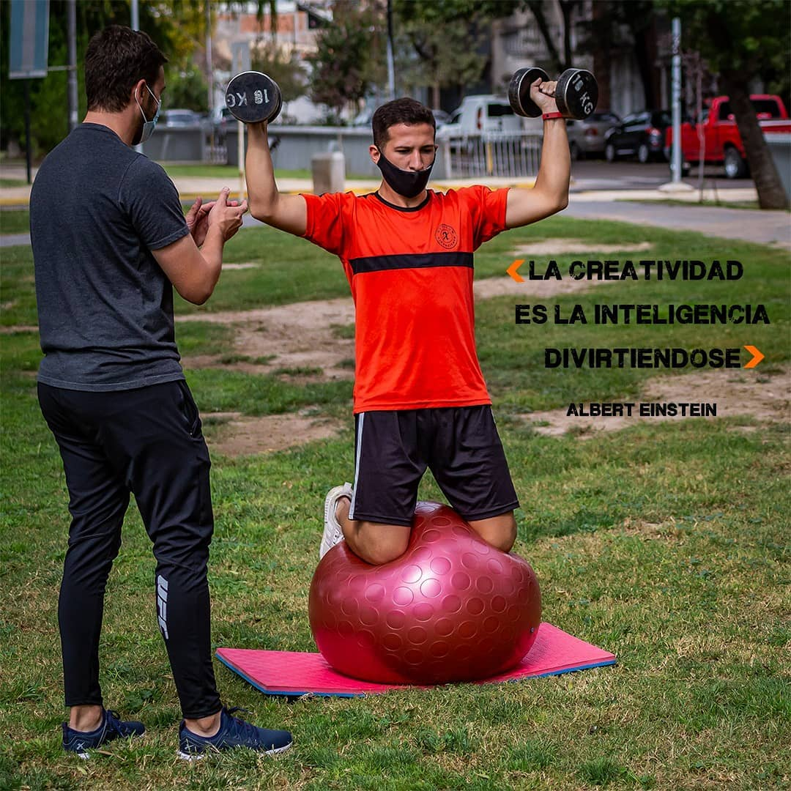
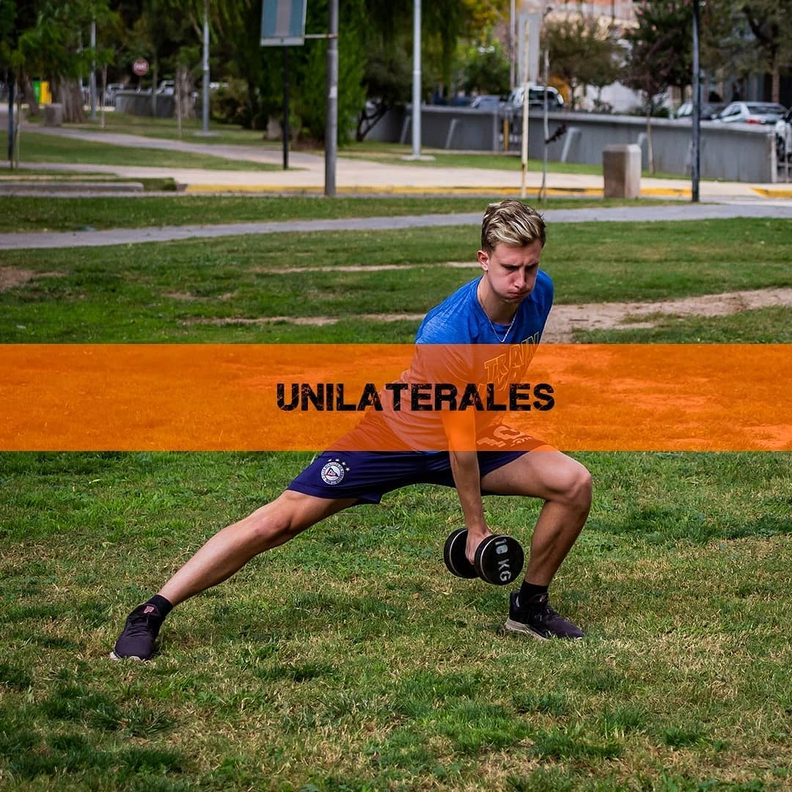

Fuerza
Trabajo de base para mejorar estabilidad, potencia y resistencia muscular.
Entrenamiento funcional, técnica y planificación para corredores que quieren mejorar rendimiento, prevenir lesiones y llegar más fuertes a cada carrera.

Menos ejercicios sueltos. Más criterio, progresión y transferencia directa al trail running.
Trabajo de base para mejorar estabilidad, potencia y resistencia muscular.
Patrones de movimiento para subir, bajar y sostener la postura en fatiga.
Ejercicios adaptados al gesto deportivo y a las demandas de montaña.
Planificación con objetivos claros, seguimiento y evolución del atleta.

La propuesta combina teoría, práctica y corrección técnica para que cada ejercicio tenga sentido dentro del rendimiento del corredor.




Ideal para corredores, entrenadores y profesionales que quieren llevar el entrenamiento a otro nivel.